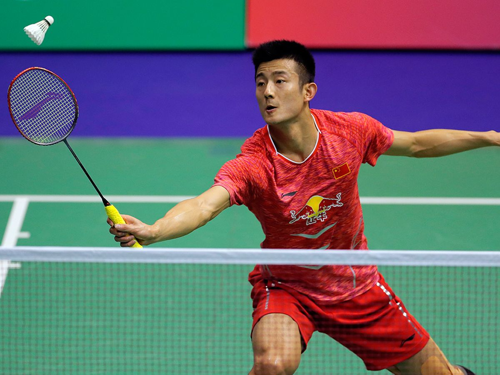
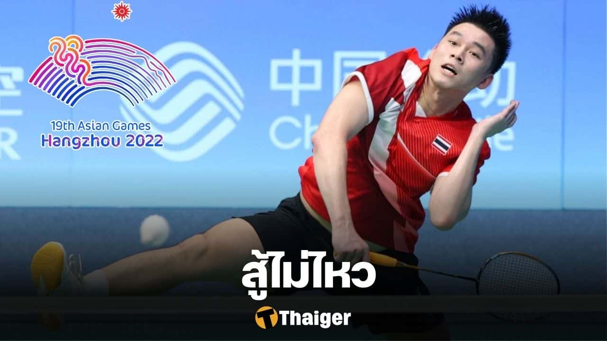

เฉิน หลง

เฉิน หลง เป็นนักกีฬาแบดมินตันชาย ทีมชาติจีน ปัจจุบันเป็นมือวางอันดับ
6 ของโลก
ในปี ค.ศ.1996 เมื่อเฉินอายุ 7 ขวบ พ่อ
และแม่ของเขาส่งไปเรียนโรงเรียนกีฬา
ในปี ค.ศ.1996 เมื่อเฉินอายุ 7 ขวบ พ่อ
และแม่ของเขาส่งไปเรียนโรงเรียนกีฬา
ในปี ค.ศ.2005 เขาได้รับเลือกให้เป็นตัวแทนนักกีฬาเยาวชนทีมชาติจีน
และต่อมาในปี ค.ศ.2006 เขาได้รับเลือกให้เป็นนักกีฬาทีมชาติจีน
เมื่อเดือนกรกฎาคม ค.ศ. 2007
เขาได้รับเลือกให้เป็นตัวแทนทีมจีนเข้าร่วมการแข่งรายการแบดมินตันเยาวชนชิงแชมป์เอเชีย
2007 และ เขาสามารถคว้าแชมป์ในประเภทชายเดี่ยวได้สำ
ในเดือนพฤศจิกายนปีเดียวกันเขาได้เข้าร่วมการแข่งขันแบดมินตันเยาวชนชิงแชมป์โลก
2007 โดยเฉินสามารถเอาชนะ เค็นอิชิ ทะโงะ จากประเทศญี่ปุ่น
ในรอบสุดท้ายด้วยคะแนน 2-0 เกม (21-16, 21-14)
หลิน ตัน

หลิน ตัน หรือที่รู้จักกันในชื่อ “Super Dan”
เป็นนักแบดมินตันมืออาชีพชาวจีน
ซึ่งเป็นที่รู้จักกันอย่างแพร่หลายว่าเป็นหนึ่งในนักแบดที่ยิ่งใหญ่ที่สุดตลอดกาล
หลิน ตัน เริ่มเล่นแบดมินตันตั้งแต่อายุยังน้อย
และสร้างชื่อให้ตัวเองอย่างรวดเร็วในระดับเยาวชน เขาได้รับรางวัล Asian
Junior Championship ในปี 2000
และยังเป็นตัวแทนของประเทศจีนในการแข่งขัน World Junior Championship
ในปีเดียวกันนั้น ในปี 2001 หลิน ตัน
ได้เปิดตัวในระดับนานาชาติเป็นครั้งแรก
และสร้างชื่อเสียงให้กับตัวเองอย่างรวดเร็วในฐานะผู้เล่นระดับแนวหน้า
นอกสนาม หลิน ตัน
เป็นที่รู้จักจากความอ่อนน้อมถ่อมตนและการอุทิศตนเพื่อกีฬา
เขามักถูกมองว่าฝึกฝนเป็นเวลาหลายชั่วโมงและมีระเบียบวินัยอย่างมากในระบบการฝึกของเขา
นอกจากนี้เขายังมีส่วนร่วมในโครงการการกุศลต่างๆ มากมาย
และมีคนจำนวนมากสังเกตเห็นจากงานการกุศลของเขา
หลิน ตัน ได้รับรางวัลมากมายตลอดอาชีพของเขา เขาคว้าแชมป์โลก 5
สมัยในปี 2006, 2007, 2009, 2011 และ 2013
นอกจากนี้เขายังได้รับรางวัลเหรียญทองโอลิมปิกในกีฬาแบดมินตันที่ปักกิ่ง
2008 และโอลิมปิกลอนดอน 2012
กลายเป็นนักแบดมินตันขนนกคนแรกและคนเดียวที่ประสบความสำเร็จนี้
นอกจากนี้ เขายังคว้าแชมป์ออลอิงแลนด์โอเพ่นถึง 6 ครั้ง
ซึ่งเป็นหนึ่งในทัวร์นาเมนต์ที่มีชื่อเสียงที่สุดในวงการกีฬา
ความสำเร็จและการมีส่วนร่วมในวงการกีฬาแบดมินตันของ หลิน ตัน
ทำให้เขาได้รับตำแหน่งใน Hall of Fame
และเขาจะจารึกประวัติศาสตร์ว่าเป็นหนึ่งในผู้เล่นแบดมินตันที่ยิ่งใหญ่ที่สุดตลอดกาล
อายุ
มรดกของเขาจะยังคงเป็นแรงบันดาลใจให้ผู้เล่นอายุน้อยจำนวนมากเข้าสู่กีฬาแบดมินตันและมุ่งมั่นที่จะทำให้ดีที่สุดเท่าที่จะทำได้
About
เว็บนี้จัดทำขึ้นเพื่อนำเสนอนักกีฬาแบดมินตันทีมชาติของประเทศจีน
จัดทำโดย : พรพุทธ สุดอุปถัมภ์
StudentId : 66130500065
เว็บนี้สร้างขึ้นโดยการเขียนโปรแกรมเท่านั้น!!
ไม่มีการใช้เครื่องมือช่วยทำ เช่น Canva
ภาษาที่ใช้ ได้แก่
HTML ใช้ในการขึ้นโครงของเว็บ
CSS ใช้ในการจัด Layout และทำ animation ของเว็บ
JAVASCRIPT ใช้ในการทำให้เว็บมีการตอบสนองกับผู้ใช้มากขึ้น เช่น คลิก